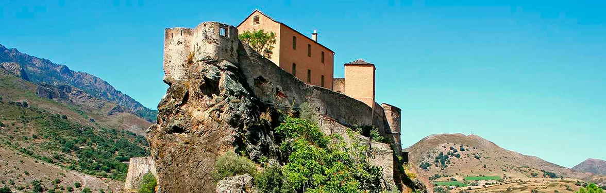

A citadella története 1419-ig nyúlik vissza, amikor Vincentello d'Istria gróf, Korzika akkori aragóniai alkirálya egy meredek sziklára felépíttette az első erődítményt a genovaiak elleni védekezésül. A századok során a vár folyamatosan gazdát cserélt és bővült, de az igazi aranykora a 18. században jött el. Pasquale Paoli vezetése alatt, amikor Corte lett a független Korzikai Köztársaság fővárosa, a citadella a nemzeti ellenállás és a szabadság legfőbb szimbólumává vált. Nemcsak katonai támaszpont volt, hanem a sziget független identitásának betonbiztos bástyája is.
A vár építészetileg leglenyűgözőbb része a legmagasabb sziklaszirten egyensúlyozó, eredeti 15. századi erőd, amelyet a helyiek teljesen joggal neveznek „Sasfészeknek” (Nid d'aigle). Ha felkapaszkodsz a meredek lépcsőkön és a bástyák tetejére érsz, azonnal megérted a hely stratégiai zsenialitását. Innen lenyűgöző, 360 fokos panoráma nyílik az alattad elterülő óvárosra, valamint a Restonica és a Tavignano folyók vadregényes, mély völgyeire, amelyek a sziget legszebb természeti látnivalói közé tartoznak.
A citadella modern kori történelme is tartogat meglepetéseket: a 20. században, egészen pontosan 1962 és 1983 között a hírhedt Francia Idegenlégió (Légion Étrangère) használta laktanyaként és kiképzőközpontként a falait. Miután a katonák kiköltöztek, a komplexumot megnyitották a nagyközönség előtt. Ma itt működik a rendkívül gazdag és modern Korzika Múzeum (Musée de la Corse), amely egy antropológiai és néprajzi időutazás: a látogatók a sziget hagyományos pásztoréletét, különleges zenei örökségét és a korzikai mindennapok titkait ismerhetik meg benne.
Ha a citadella bejárata felé sétálsz, érdemes megállnod a vár alatt található Place Gaffori-n. Itt áll Korzika másik nagy hősének, Gaffori tábornoknak a szobra a háza előtt. Az épület homlokzatát a mai napig több tucat mély golyónyom borítja - ezek az 1750-es ostrom emlékét őrzik, amikor a korzikaiak kétségbeesett harcban verték vissza a genovai túlerőt. A legenda szerint maga a tábornok felesége, Faustina Gaffori mutatott példát azzal, hogy egy puskaporos hordó mellett állva azzal fenyegetőzött: felrobbantja a saját házukat, ha a korzikai katonák megadják magukat.